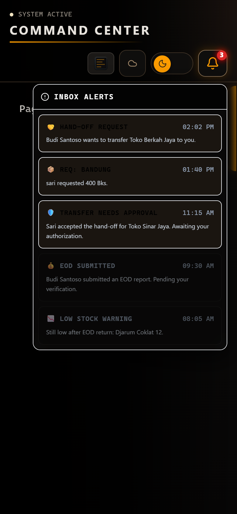
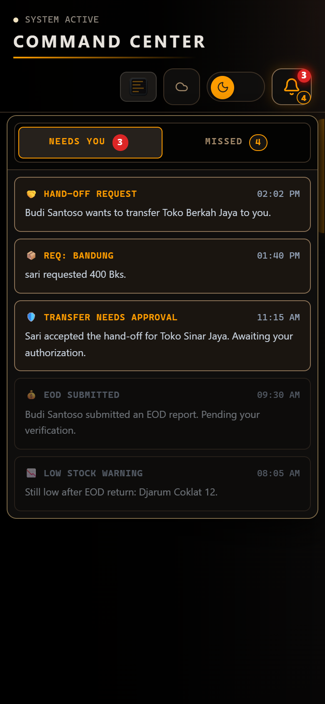
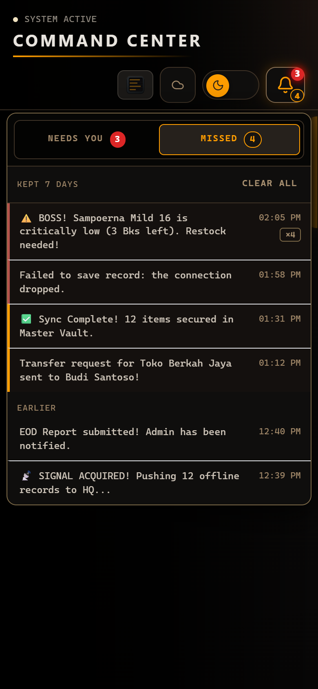
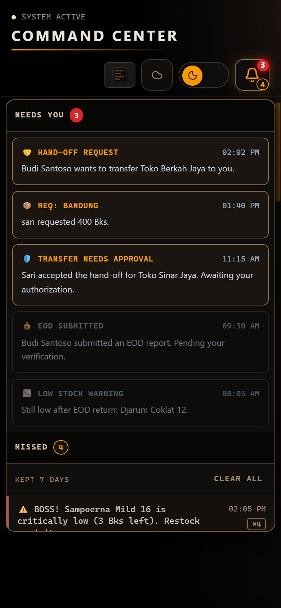

Red number on the bell = needs you. Small gold number under it = missed messages you have not opened yet.
TODAY
One list, only the requests. A top panel or capybara line that faded is gone for good.
Bug: the new-message titles print black on black (fixed in A and B).

A · NEEDS YOU RECOMMENDED
One box with a switch on top. It opens on Needs you while that has a red number. The box takes the whole phone width (374), the switch keys are 46 tall.

A · MISSED
Press Missed: every top panel and capybara line, newest first. Red edge = something failed. ×4 = the same line came 4 times. Clear all empties it; it keeps 7 days.

B · BOTH IN ONE LIST
Needs you on top, Missed under it, one scroll. On the phone the Missed list starts at the very bottom of the box (600 px down) - you scroll to see a single missed line.
